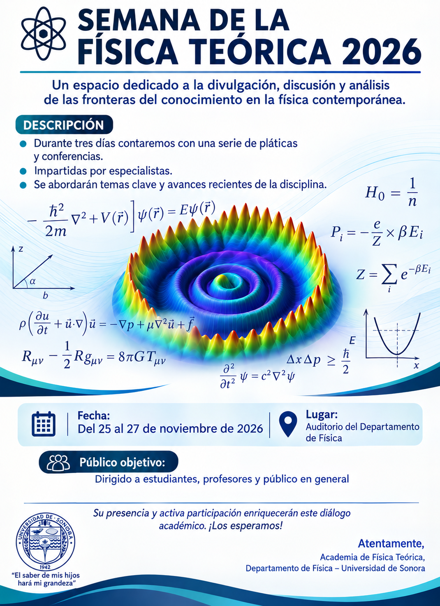

📌 Guía rápida para agregar tus archivos en GitHub:
- Logo de la Universidad: Sube tu imagen en formato JPG nombrada como
logo-uni.jpgen la raíz de tu repositorio. - Póster del evento: Sube tu cartel principal nombrado como
poster.jpg. - Fotografías: Sube tus fotos nombrándolas
foto1.jpg,foto2.jpgyfoto3.jpg.
Cartel Oficial

Programa de Actividades
Miércoles 25 de Noviembre
| Hora | Actividad / Plática | Ponente |
|---|---|---|
| 16:00 - 16:20 | Inauguración y Bienvenida | Comité Organizador |
| 16:30 - 17:20 | La Ecuación de Dirac con Álgebra Geométrica (el espín, el reloj de de Broglie y el zitterbewegung en una visión unificada) | Dr. Arnulfo Castellanos Moreno |
| 17:30 - 18:00 | Receso / Café | - |
| 18:00 - 18:50 | Las rosquillas y su relación con el viaje en el tiempo | Homer Simpsons |
| 19:00 - 19:50 | Una mirada al Cosmos a través del Hielo: Francis Halzen, IceCube y la Nueva Frontera | Dr. León Manuel García de la Vega |
Jueves 26 de Noviembre
| Hora | Actividad / Plática | Ponente |
|---|---|---|
| 16:00 - 16:50 | Avances en Mecánica Cuántica y Relatividad | Dr. Ygor Livtanov |
| 17:00 - 17:50 | Simetrías Ocultas en el Universo Temprano | Dr. Red Richards |
| 18:00 - 18:30 | Receso / Café | - |
| 18:30 - 19:20 | Topología y Gravitación Cuántica | Dr. Bruce Banner |
| 19:20 - 20:00 | Discusión Abierta y Perspectivas Teóricas | Todos los asistentes |
Viernes 27 de Noviembre
| Hora | Actividad / Plática | Ponente |
|---|---|---|
| 16:00 - 18:00 | Sesión de Pósters (Exposición y debate) | Participantes y Estudiantes |
| 18:00 - 19:00 | Plática Magistral de Cierre | Invitado Especial |
| 19:00 - 20:00 | Clausura y Convivio | Comité Organizador |
Ponentes y Resúmenes
Dr. León Manuel García de la Vega
Institución: Departamento de Física
Título de la plática: Una mirada al Cosmos a través del Hielo: Francis Halzen, IceCube y la Nueva Frontera de la Física Teórica
Resumen: En octubre de 2026, la Real Academia de las Ciencias de Suecia reconoció con el Premio Nobel de Física a Francis Halzen por su visión pionera al concebir y liderar el Observatorio de Neutrinos IceCube en el Polo Sur, transformando un kilómetro cúbico de hielo antártico en el telescopio de partículas más grande del planeta.
Dra. Elena Morales
Institución: Centro de Investigaciones Teóricas
Título de la plática: Simetrías Ocultas en el Universo Temprano
Resumen: Un recorrido accesible a través de las simetrías fundamentales en el Modelo Estándar y las búsquedas actuales de nueva física más allá de las partículas conocidas.
Galería de Fotos